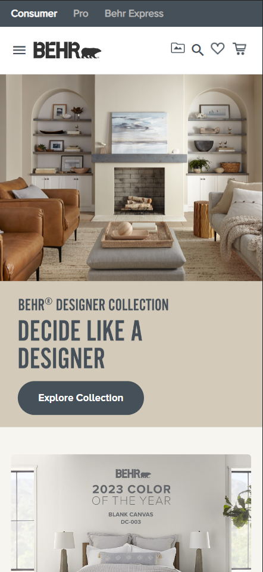

Design Principles Document
Rene Olive
Snapfish
https://www.snapfish.com/homeSnapfish uses white space and clean design really well on their home page. Their logo has space around to where it is clear and readable, the margins between elements on the page are clean with breathing room, and the images with promotions aren't too busy with words that we can't focus on the main message being conveyed. Our eyes are intentionally drawn to what they want us to look at to start down the sales funnel.
Behr
https://www.behr.com/consumer/ Behr is known for their excellent brand of paint for consumers and pros, so it makes sense that their site makes excellent use of design elements like visual hierarchy. Their main message on the promotional item pictured here is, brilliantly, like a double call to action. They know their customers are "doers" so it makes sense that the first thing you want to do is "decide", then it draws your eye above that message where you can see the "Behr Designer Collection". This lets the consumer know they have the resources to act on their decision. Finally, the eye is drawn to the call to action button where we can explore the collection and find our resources for inspiration. I also appreciate that their logo and company name is larger in the top section of the viewport so it's easy to remember the company.